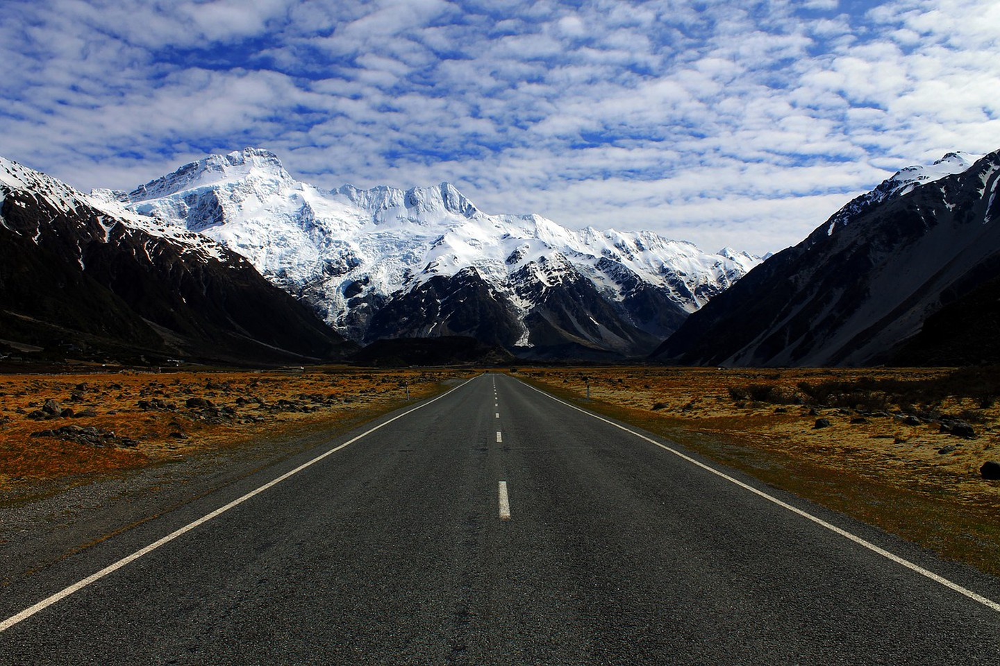
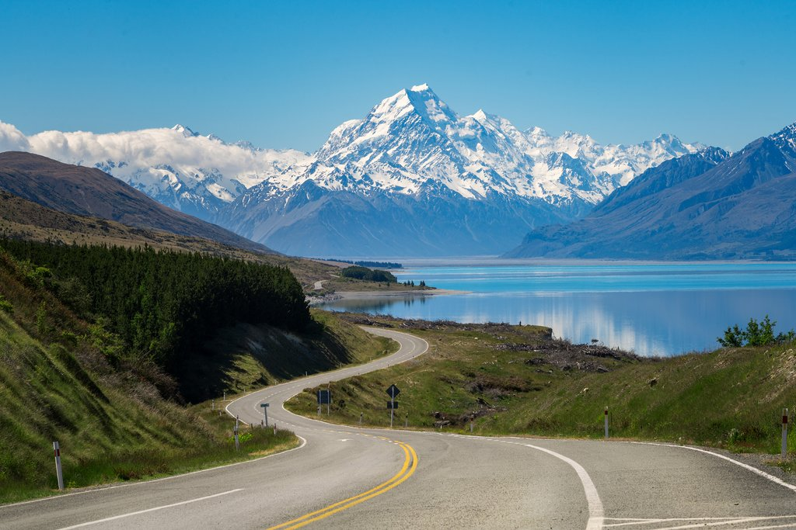
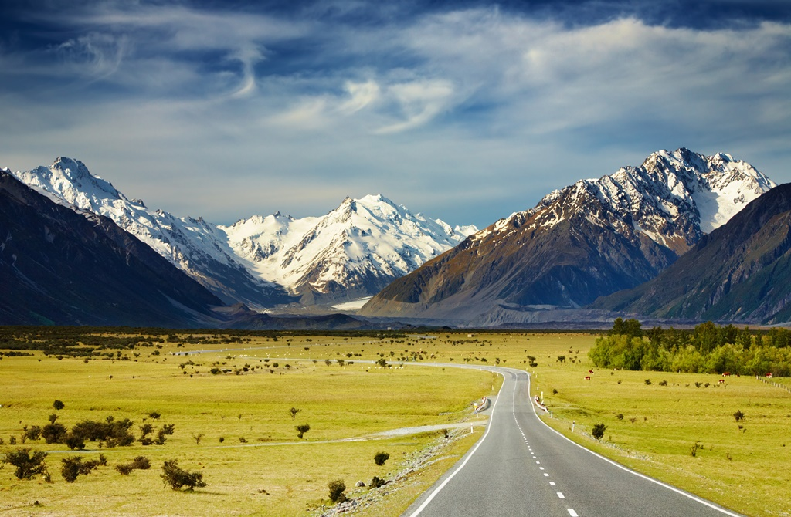
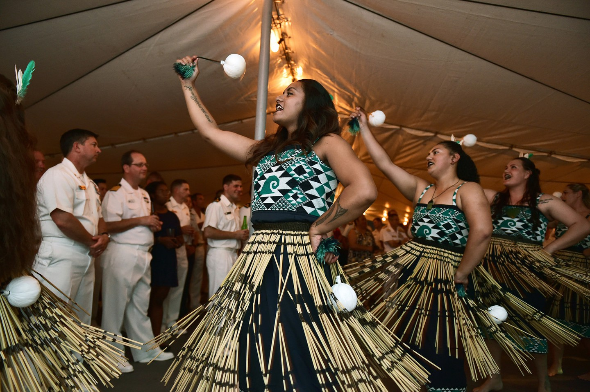
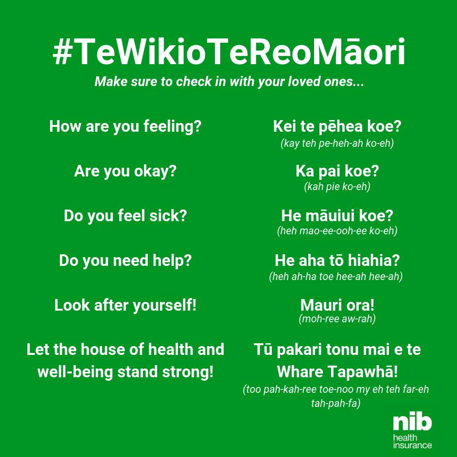
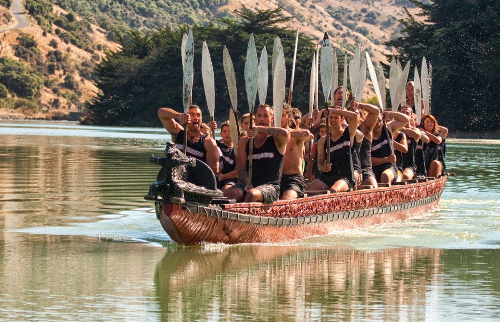
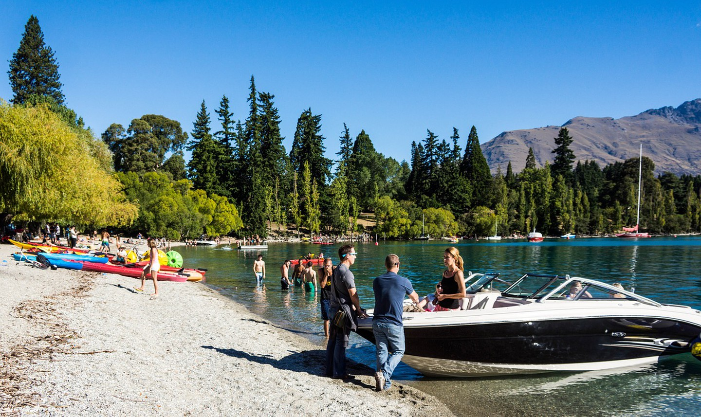
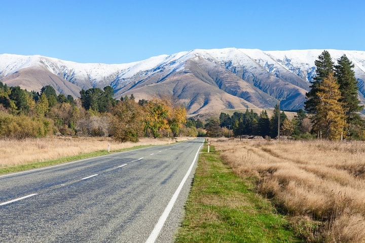
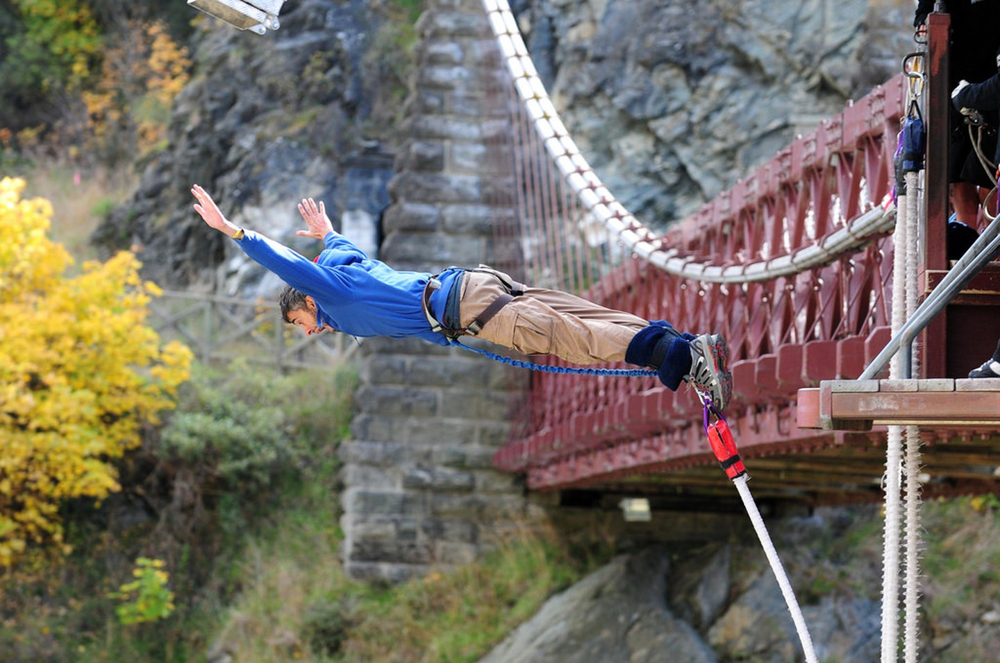

8 reaons to visit newzeland
About New Zealand

When it comes to the most beautiful places to visit, New Zealand doubtlessly stands as a top contender. Regardless of which part of the country you turn to, there's either some spectacular natural landscape, fascinating history, rare wildlife, or beautiful cities.In the 2020 Global Peace Index survey, New Zealand is ranked the second most peaceful country in the world, in terms of societal safety and security.New Zealand is an island country in the southwestern Pacific Ocean.It consists of two main landmasses—the North Island andthe South Island—and over 700 smaller islands, covering a total area of 268,021 square kilometres
1.The sublime landscapes

Even if you haven’t seen the The Lord of the Rings or The Hobbit films, you’ll know New Zealand is incredibly scenic. The South Island is lined with exquisite mountain ranges, glaciers, and lush forestry while the North is renowned for its breathtaking coastlines, geothermal treasures, and remarkable glowworm caves. And this is just a quick taster — you need to see the majestic landscape from up close to truly appreciate its beauty.
2.t’s a no-frills travel destination
  
Reaching New Zealand is as easy as getting the right visa, hopping on a plane, and arriving some 12-14 hours (if you’re in North America, more if you’re coming from Europe) later. Getting around is as easy as hiring a car or campervan, or even getting a travel pass from a local bus company. The exchange rate tends to be favorable towards the US Dollar, British Pound and Euro too, so even though the country is slightly more expensive than other destinations, you’ll be able to stretch your budget and make it last.
3.The remarkable Maori culture
  
There aren’t many places in the world which have made as big of an effort to preserve and respect their indigenous culture as New Zealand has.Maori phrases feature prominently in street signs, TV programmes, and everyday interactions. Waitangi Day, albeit controversial, is very much a part of local tradition. There are also plenty of attractions especially devised to bring New Zealand’s visitors closer to the Maori culture, heritage and history.
4.New Zealand is relatively safe

Obviously, the usual precautions apply: always lock up your valuables, steer clear of spotty neighbourhoods and so forth. Still, comparably speaking, New Zealand is much safer than many places around the world. For the most part, you can walk comfortably at night in all the major cities (again, provided you avoid the shady areas) and solo travellers can enjoy all the best attractions without worrying about their safety.
5.The world-famous vineyards

New Zealand’s temperate climate and soil diversity have helped the country stamp its place in the global viticulture stage. The whites tend to be the best renowned, though a dedicated network of vineyards in Central Otago bring plenty of red grape varieties to the forefront. Marlborough is the country’s leading wine producer, and there are many others scattered around the North and South Islands too.
6.It’s jam-packed with adventure activities

Bungy jumping in Queenstown. Abseiling in Auckland’s Waitakere Ranges. Caving and canyoning in Waitomo. Zorbing in Rotorua. White water rafting, jet boating, kayaking, skydiving, heli-skiing… you get the idea. New Zealand is the perfect playground for adrenaline junkies and sports enthusiasts of all kinds. If that’s the kind of thing you’re into, you’ll definitely be spoiled for choice when it’s time to map out your must-dos.
7.An incredibly diverse wildlife awaits

Birds, prehistoric reptiles, rare dolphins and many other marine creatures — a trip to New Zealand will bring animal-lovers a trove of wildlife to discover. The famed kiwi birds can be seen at selected reserves and zoos, particularly in Auckland, Rotorua, and Wellington. There are various tours that will expose you to the marine life, and you’ve got your pick of predator-free islands along the Bay of Islands, Hauraki Gulf, Wellington, and Marlborough Sounds to explore as well.

8.Get into all the local festivals

Auckland and Christchurch come alive every Chinese New Year with their Lantern Festivals. Wellington’s Cuba Street is home to their own eclectic festivities, Tauranga holds the Jazz Festival every Easter, Queenstown’s Winter Festival is an annual occurrence, and there are oodles of concerts and events throughout the year. In other words, no matter where you’re heading, you’ll always be entertained by a regular lineup of local activities.